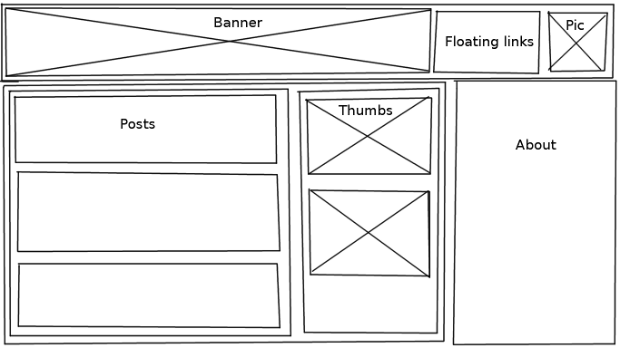

I know roughly what i want. A little bit of everything. I've played with LAMP (to check out) (to install) and have gotten comfortable with basic website development, mainly focusing on php/mysql by making a proof of concept facebook mockup, the only really properly working part of which, was the authentication interface which i took much pleasure in bypassing with sql injection.
I have also dipped my toes into phpbb and am itching to adapt that into something unique.
There are actually a lot of open source packages availible to use and i love that. I'm a big fan of open source ideology
but sometimes it just isn't necessary. I had a quick look at wordpress(to check out)
and while i was intrigued that a hefty percentage of the
internet uses it(60 million users can't be wrong) I think you know you're a linux geek when you think the worlds
most popular content management system looks incredibly bloated.
I'm not dissing wordpress though. I'm just naively a fan of
reinventing the wheel. I don't want to use some resource heavy
framework when i can implement the functionality myself and get only
what i need and an interesting learning experience out of it.
I decided what i wanted was several easily organised projects with a central interface which will be my home page.
If i was to use a foreign package this might not be straight forward.
I have my banner up top with a logo i literally made up on the spot but i like it :)
I'll have a photo of my in the corner because i'm in love with myself and links to
the projects i've embarked on floating in the space between (blog, forum, etc).
the main body of the page will be updates regarding anything relating to said projects and
to the right will be a little 'about' thing i recon.
One of the few things i can thank uni for is a method of web design
that i hadn't considered previously. This involves using photoshop or an equevilant program
to draw rectangles to design the layout of all the elements of the webpage.
Something that after 5 years splashing in the kiddy pool of the I.T industry, i should know by now is that proper planning is invaluable to success and avoiding spending unecessary hours sitting infront of my laptop. I'm just going to pretend that i got this right to begin with and didn't just have a vague idea in my head as i spammed <div> tags into apanta studio
